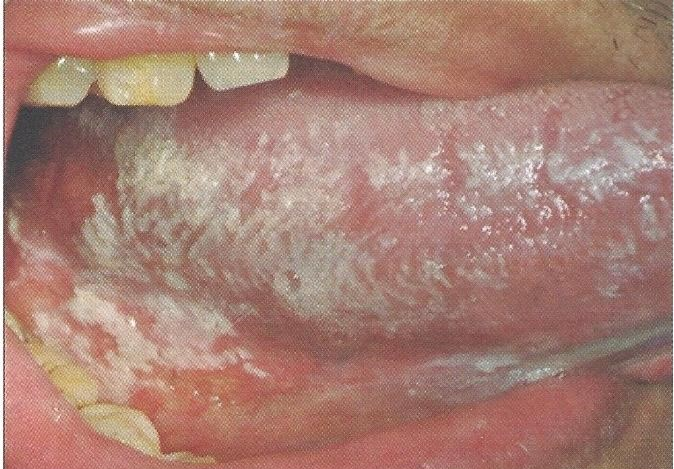

โรคราแคนดิดาชนิดเยื่อเทียม
เกิดจากการติดเชื้อรา Candida Albicans
พบได้ที่เยื่อเมือกช่องปากทุกตำแหน่ง เป็นคราบสีขาวคล้ายนมข้น เช็ดหลุดออกง่าย
อาการ แสบร้อน การรับรสที่ผิดปกติ รู้สึกมีคราบหนาภายในช่องปาก
ยืนยันด้วยการย้อม Gram Stain
พบในผู้ป่วยเบาหวาน การขาดสารอาหาร การติดเชื้อไวรัส HIV